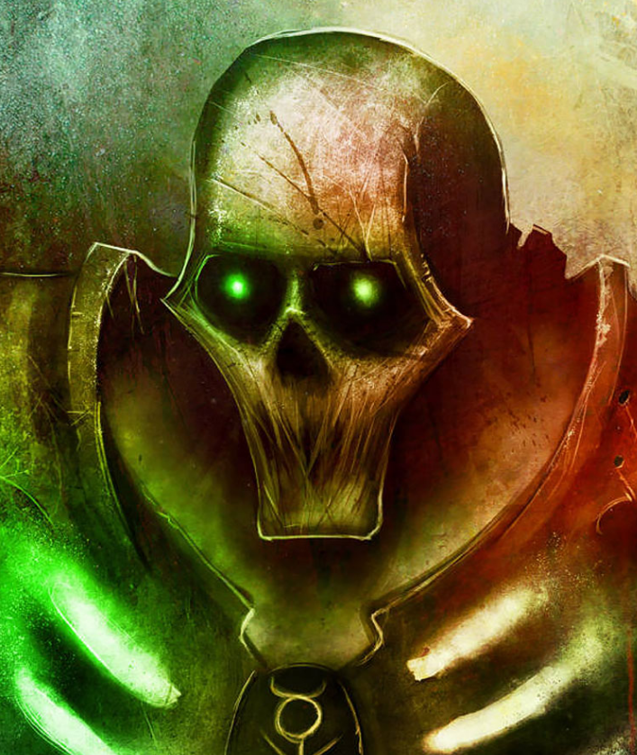

Dossier xenos 952.M41
Le nécroderme est la substance qui définit les Nécrons. Il ne s’agit pas d’un simple métal, ni d’un alliage connu. C’est une matière vivante, capable de se réparer, de se transformer et de répondre à une volonté.
Introduit lors de la biotransférence, il remplaça entièrement les corps des Nécrontyrs. Ce qui était chair devint structure. Ce qui était vie devint fonction.

ORIGINES ET NATURE
Le nécroderme possède des propriétés que les technologies impériales ne peuvent reproduire. Il peut se reconstituer après des dommages sévères. Des membres détruits peuvent se reformer. Des corps fragmentés peuvent se réassembler.
Cette capacité donne aux Nécrons une apparence d’immortalité. Un guerrier abattu peut se relever. Un seigneur détruit peut revenir.
Cependant, cette résilience n’est pas absolue. Une destruction suffisante, ou une désintégration complète, peut empêcher toute régénération. Mais atteindre ce niveau de dégâts nécessite une puissance considérable.
Le nécroderme n’est pas passif. Il réagit. Il s’adapte. Il peut modifier sa forme selon les besoins de l’entité qu’il compose.
STRUCTURE ET DOCTRINE
Chez les C’Tan, cette matière permettait de contenir des entités cosmiques. Chez les Nécrons, elle sert de prison.
Car si le corps est immortel, ce qu’il contient ne l’est pas toujours. Les consciences transférées dans ces enveloppes ont été altérées. Fragmentées. Parfois perdues.
Certains Nécrons conservent une identité claire. D’autres ne sont plus que des automates exécutant des protocoles anciens.
Le nécroderme ne restaure pas ce qui a été retiré. Il maintient ce qui reste.
MENACE ACTUELLE
Cette matière est également liée aux systèmes de téléportation nécrons. Lorsqu’un corps est trop endommagé, il peut être désassemblé et renvoyé vers un monde-tombe pour réparation.
Cela rend leur destruction encore plus difficile. Ce qui disparaît du champ de bataille n’est pas nécessairement perdu. Il peut revenir.
Les tentatives impériales d’étude du nécroderme ont échoué ou conduit à des incidents. Sa structure ne répond pas aux lois physiques classiques. Elle semble obéir à des principes que l’Imperium ne comprend pas.
Il faut comprendre ceci. Le nécroderme n’est pas seulement une armure. C’est la preuve que les Nécrons ont remplacé la vie par quelque chose de plus durable. Mais aussi de plus vide.
Fin de l’extrait. Toute récupération de nécroderme doit être immédiatement signalée. Manipulation non autorisée interdite.